2019 JavaScript的开销
- 原文→
- 可行的高级方案
- 为什么下载和执行时间很重要？
- V8在改进解析/编译方面做了什么？
- 这些变化如何反映你在DevTools中看到的内容？
- 这些变化对现实场景的影响是什么？
- 解析JSON的开销
- 对于重复访问的解析/编译呢？
- 结论
- 延伸阅读
原文→
注意：如果你喜欢看演示文稿而不是阅读文章，那么请欣赏下面的视频！如果不是，跳过视频继续阅读。
“JavaScript的开销”由Addy Osmani在2019#PerfMatters大会上发表。
在过去几年里，JavaScript开销的一大变化是浏览器解析和编译脚本的速度有所提升。在2019年，处理脚本的主要开销是下载和CPU执行时间。
如果浏览器的主线程忙于执行JavaScript，那么用户交互可能会延迟，因此优化脚本执行时间和网络的瓶颈可能会很有效果。
可行的高级方案
这对web开发人员意味着什么？解析和编译开销不再像我们曾经认为的那样慢。JavaScript打包（bundle）需要关注的三件事是：
译者注：对于bundle这个单词，在不同的上下文中，目前没有找到一个通用的中文词汇来翻译，因此直接用bundle也许更方便理解（类似的单词还包括chunk，worker等）
- 减少下载时间
- 保持较小的JavaScript bundle，尤其是对于移动设备。体积小的bundle能够提高下载速度，降低内存使用率，并减少CPU消耗。
- 避免只有一个大的bundle；如果一个bundle超过50–100 kB，请将其拆分为独立且较小的bundle。（使用HTTP/2的多路复用，可以同时传递多个请求和响应消息，从而减少额外请求的开销。）
- 在移动设备上，由于网络速度的原因，你不希望过多的传输，而且还要保持低内存使用率。
- 改进执行时间
- 避免耗时的任务，因为这些任务会使主线程持续繁忙，并且会阻碍页面交互的速度。下载后，脚本执行时间现在是主要的开销。
- 避免使用大体积的内联脚本（因为它们仍然在主线程上被解析和编译）。一个好的经验法则是：如果脚本超过1KB，请避免内联它（这也是因为外部脚本的代码缓存起始于1KB）。
为什么下载和执行时间很重要？
为什么优化下载和执行时间很重要？对于低速网络，下载时间至关重要。尽管4G（甚至5G）在世界各地都在增长，但我们的有效连接类型仍然不一致，因为我们中的许多人在旅途中遇到了感觉像3G（或更糟）的速度。
JavaScript的执行时间对于CPU速度慢的手机很重要。由于CPU、GPU和温控调频的不同，高端和低端手机的性能存在巨大差异。这对JavaScript的性能很重要，因为执行是受CPU限制的。
事实上，在Chrome这样的浏览器中，页面加载所花费的总时间中，有多达30%的时间用于JavaScript的执行。下图是在高端台式机上加载一个具有典型工作负载网站的页面（Reddit.com）：
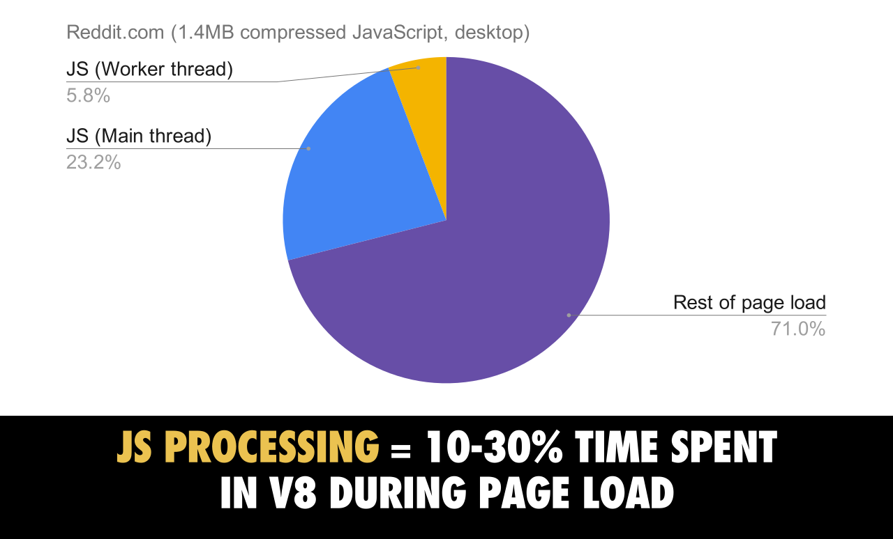
在V8中，JavaScript的执行过程占页面加载阶段所用时间的10-30%。
在移动设备上，与高端设备（Pixel 3）相比，中端手机（Moto G4）执行Reddit JavaScript的时间要长3-4倍，而在低端设备（低于100美元的Alcatel 1X）上，执行时间超过6倍：
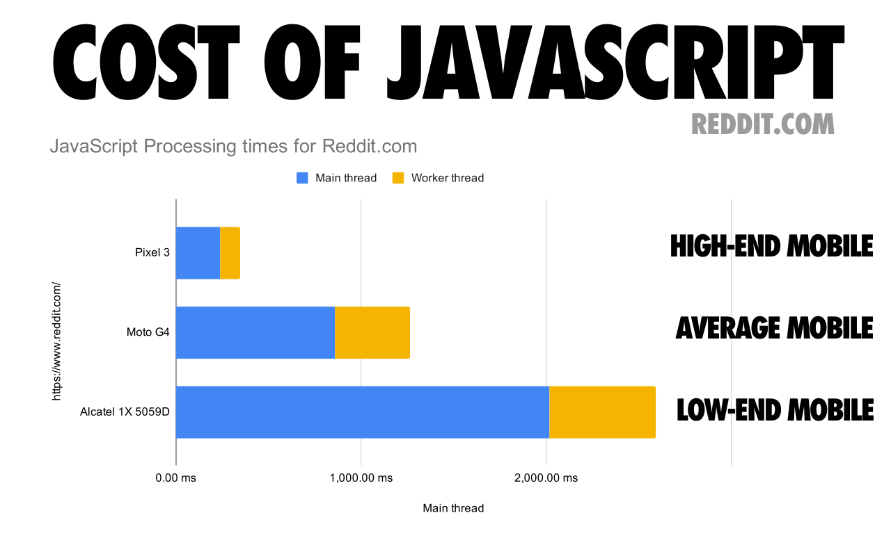
Reddit的JavaScript在不同分类的设备（低端、普通和高端）上的耗时开销
注意：Reddit在桌面端和移动端网页上有不同的体验，因此MacBook Pro的结果无法与其他结果进行比较。
当你试图优化JavaScript的执行时间时，请注意可能会长期独占UI线程的长任务。即使页面看起来已经准备好了，也可以阻止关键任务的执行。把这些分解成更小的任务。通过拆分代码并确定加载顺序的优先级，你可以更快地让页面交互，并有望降低输入延迟。
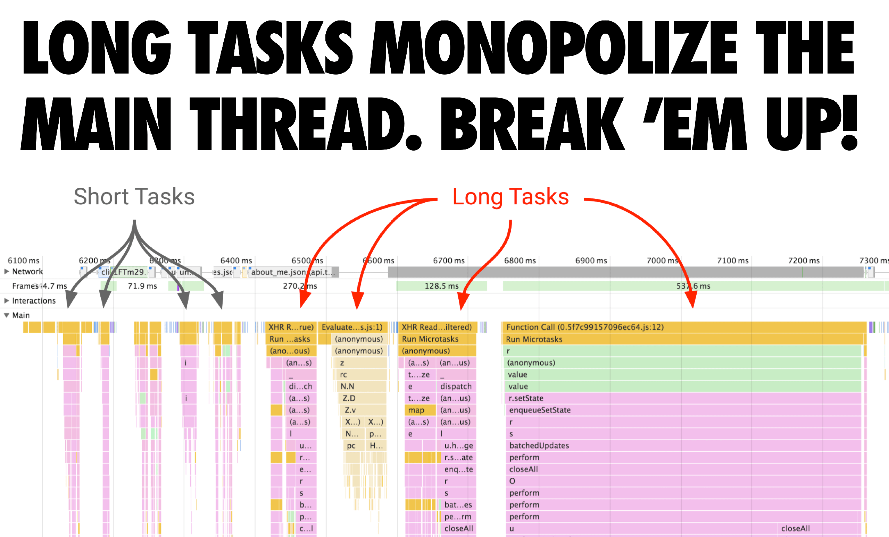
长任务占据了主线程。你应该把它们分开。
V8在改进解析/编译方面做了什么？
V8中的原始JavaScript解析速度比chrome60提高了2倍。同时，由于Chrome中的其他并行优化工作，原始解析（和编译）开销变得不那么明显/重要。
通过在Worker线程上解析和编译，V8平均减少了40%的主线程解析和编译工作量（例如，Facebook减少了46%，Pinterest减少了62%），最大的改进达到81%（YouTube）。这是对现有非主线程流式解析/编译的补充。
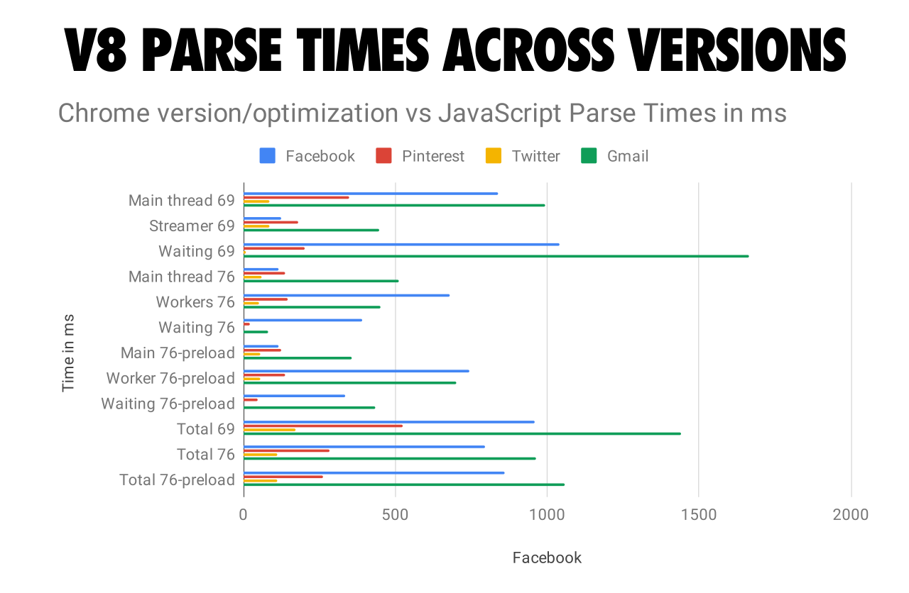
不同版本的V8解析时间
我们还可以在Chrome发布的不同V8版本中可视化这些变化对CPU时间的影响。在Chrome61解析Facebook JS的同等时间内，现在Chrome75可以同时解析Facebook的JS和6倍Twitter的JS。
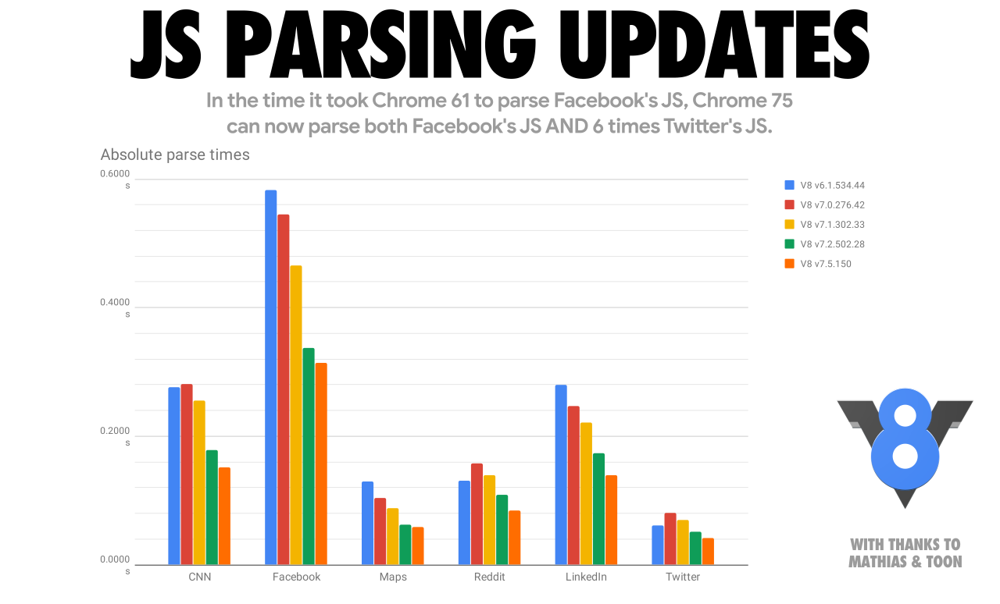
在Chrome61解析Facebook的JS时，Chrome75现在可以同时解析Facebook的JS和6倍Twitter的JS。
让我们深入了解这些变化是如何解锁的。简而言之，脚本资源可以在Worker线程上进行流式解析和编译，这意味着：
- V8可以解析+编译JavaScript而不阻塞主线程。
- 当完整的HTML解析器遇到<script>标签时，流解析就开始了。对于解析器阻塞脚本，HTML解析器暂停，而对于异步脚本则继续。
- 对于大多数实际的连接速度，V8的解析速度比下载快，因此V8在最后一个脚本字节下载后几毫秒内完成解析+编译。
不那么简短的解释是…Chrome的老版本会在开始解析脚本之前下载完整的脚本，这是一种简单的方法，但它没有充分利用CPU。在41到68版本之间，一旦下载开始，Chrome就开始在一个单独的线程上解析async和defer脚本。
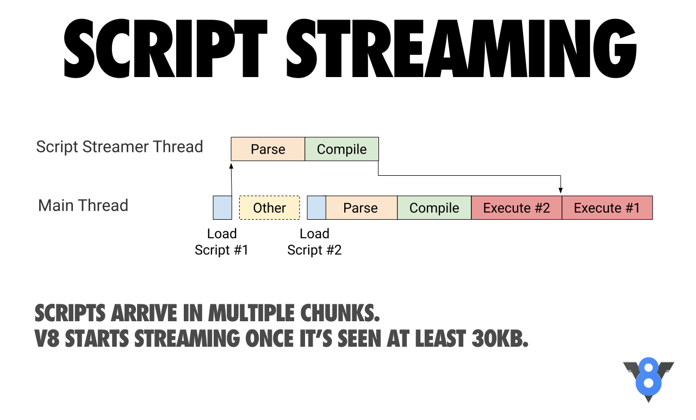
脚本以多个chunk的形式下载到浏览器。V8在接收到至少30kB时开始流式解析。
在Chrome71中，我们转向了基于任务的设置，在这种设置中，调度器可以同时解析多个async/defer脚本。这一变化的好处是主线程解析时间减少了约20%，根据实际网站的测量，TTI（Time To Interactive）/FID（First Input Delay）总体上提高了约2%。
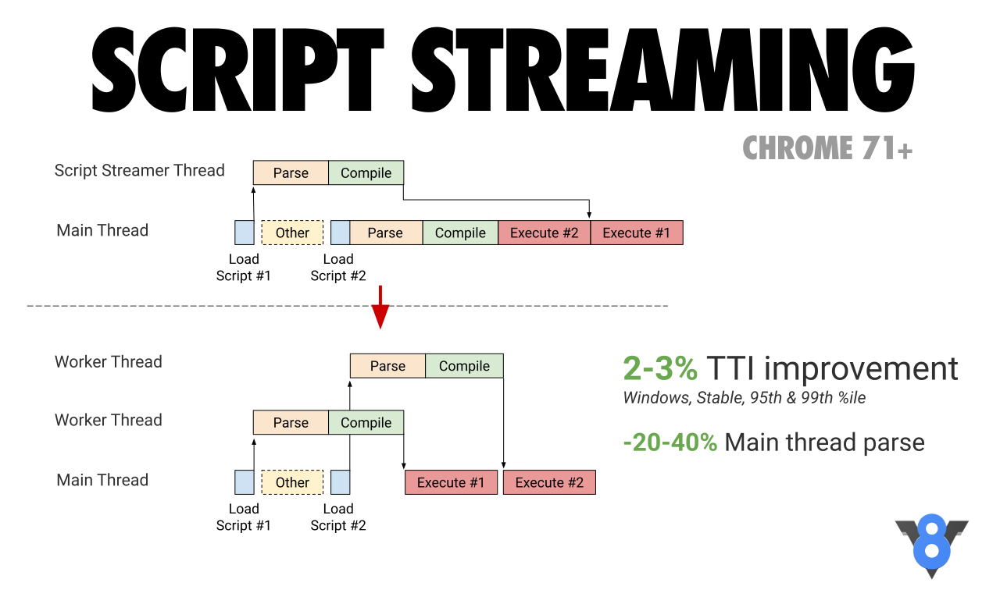
Chrome71迁移到基于任务的设置中，调度器可以同时解析多个async/defer脚本。
在Chrome72中，我们切换到使用流作为主要的解析方式：现在也可以用这种方式解析常规的同步脚本（虽然不是内联脚本）。如果主线程需要的话，我们也停止了取消基于任务的解析，因为这会不必要地重复已经完成的任何工作。
Chrome以前的版本支持流式解析和编译，其中来自网络的脚本源数据必须先到达Chrome的主线程，然后才能转发到流处理器（streamer）。
这通常会导致流式解析器等待，因为主线程上的其他工作（如HTML解析、布局或JavaScript执行）阻塞了已经从网络下载的数据转发到流任务。
我们现在正尝试性的在预加载时开始解析，而main-thread-bounce（主线程回弹）在这之前会阻塞。
Leszek Swirski’s BlinkOn 演示呈现了更多细节:
这些变化如何反映你在DevTools中看到的内容？
除上述之外，DevTools中有个问题，它在呈现整个解析器任务时示意自己正在使用CPU（完全阻塞）。因此，每当解析器需要数据（需要遍历主线程）时，它都会阻塞。当我们从单个流处理器（streamer）线程切换到若干个流式（streaming）任务时，这个问题变得非常明显。以下是你在Chrome69中看到的：
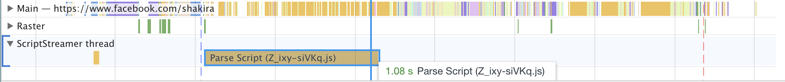
DevTools的问题是呈现整个解析器任务时示意它正在使用CPU（完全阻塞）
显示“Parse Script”任务需要1.08秒。然而，解析JavaScript并没有那么慢！大部分时间什么都没做，除了等待数据通过主线程。
Chrome 76描绘了一幅不同的画面：
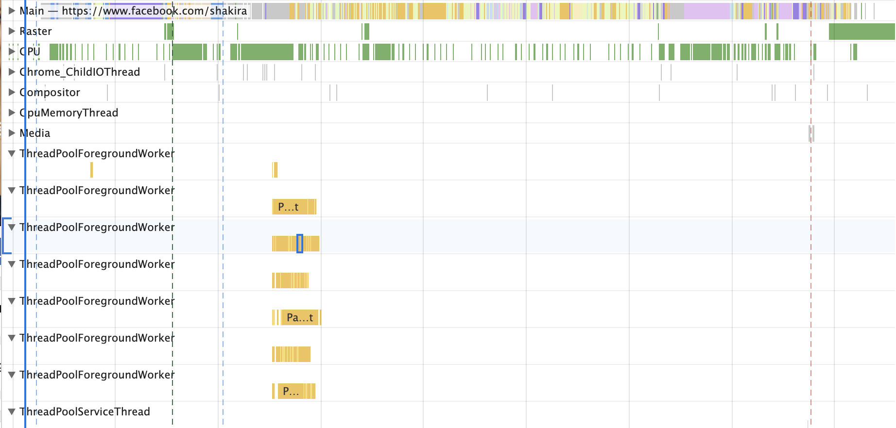
在Chrome76中，解析被分解成多个更小的流式任务。
通常，DevTools性能面板对于全面了解页面上正在发生的事情非常有用。对于具体的V8特定指标，如JavaScript解析和编译时间，我们建议使用Chrome跟踪和运行时调用统计（RCS）。在RCS结果中，Parse-Background和Compile-Background告诉你在主线程之外解析和编译JavaScript花费了多少时间，而Parse 和 Compile则捕获主线程指标。
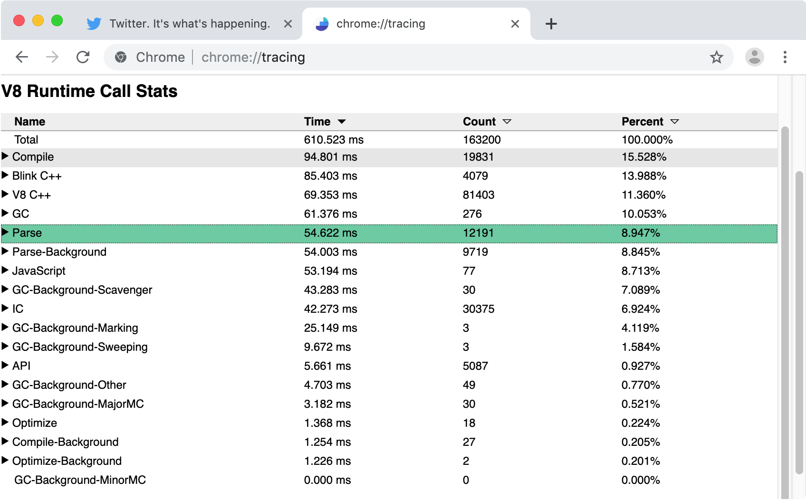
这些变化对现实场景的影响是什么？
让我们看一些真实网站的示例，以及如何处理脚本流。
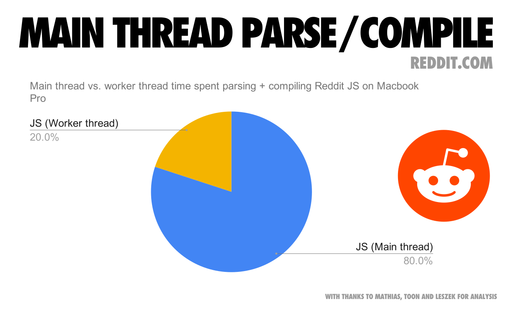
主线程vs Worker线程在MacBookPro上解析和编译Reddit的JS所花费的时间
Reddit.com网站有几个超过100kb的bundle，这些bundle被封装在外部函数中，导致主线程上的大量延迟编译。如上图，真正的问题是主线程的耗时，因为主线程持续占用会延迟交互体验。Reddit将大部分时间花在主线程上，而Worker/Background线程的使用量很低。
他们可以将一些较大的bundle拆分成较小的bundle（例如每个50kb）且无需封装来获得收益，从而达到最大程度的并行，这样每个bundle都可以流式解析+单独编译，并减少启动期间的主线程解析/编译。
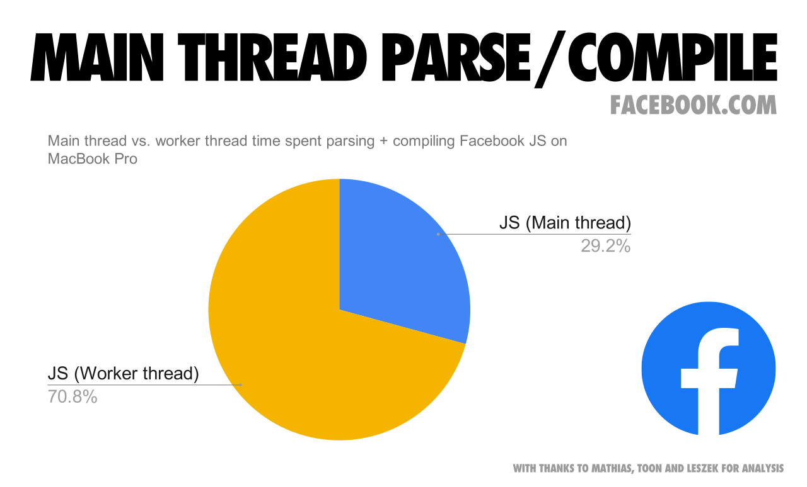
主线程vs Worker线程在MacBookPro上解析和编译Facebook的JS所花费的时间
我们也可以看看Facebook.com。 Facebook约292个请求中加载了6MB左右的压缩JS，有些是异步的，有些是预加载的，有些是以较低优先级获取的。它们的许多脚本都非常小而且粒度很细，也因此可以同时进行流式解析/编译，从而有助于在Background/Worker线程上进行整体并行化。
注意，很可能你不是Facebook，并且没有类似Facebook或者Gmail这样历史悠久的适合大量脚本的桌面应用。但通常情况下，bundle需要保持粗粒度并且按需加载。
尽管大多数JavaScript解析和编译工作可以在Background线程上以流的方式进行，但仍有一些工作必须在主线程上进行。当主线程繁忙时，页面无法响应用户输入。请注意下载和执行代码对用户体验的影响。
注意：目前，并不是所有JavaScript引擎和浏览器都将脚本流作为加载优化来实现。我们仍然相信，这里的总体指导会提升整体的用户体验。
解析JSON的开销
因为JSON语法比JavaScript语法简单得多，所以JSON的解析比JavaScript更高效。基于这个前提，通过大型的类似JSON的配置对象字面量（例如内联Redux stores）可以提升web应用程序的启动性能，而不是通过数据内联为JavaScript对象字面量实现，如下所示：
1 | const data = { foo: 42, bar: 1337 }; // 🐌 |
…它可以用JSON字符串的形式表示，然后在运行时解析JSON：
1 | const data = JSON.parse('{"foo":42,"bar":1337}'); // 🚀 |
只要JSON字符串仅仅计算一次，那么JSON.parse方法要比JavaScript对象字面量快得多，尤其是对于冷加载。将此技术应用于10kb或更大的对象是一条很好的经验法则，但与通常的性能建议一样，在进行任何更改之前先测量实际效果。
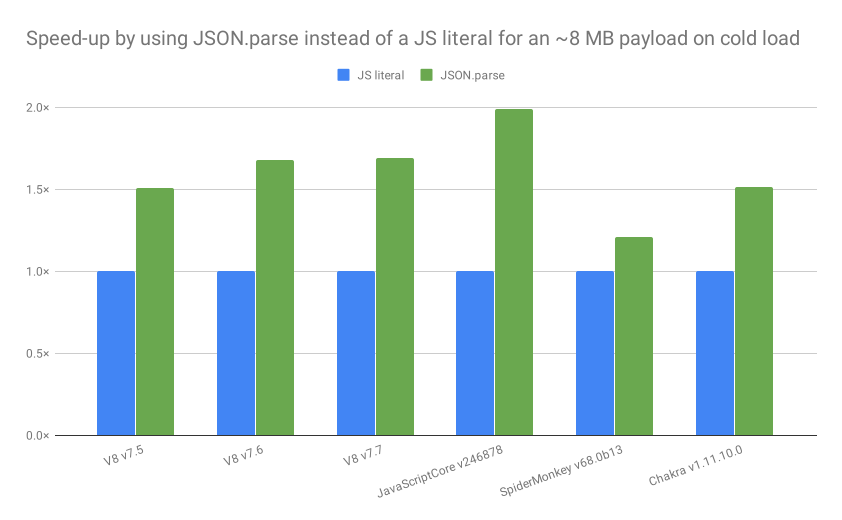
JSON.parse(‘…’)相比于等价的JavaScript字面量，在解析，编译和执行上要快得多— 不仅仅是V8（快1.7倍），所有主要的JavaScript引擎都如此
下面的视频将从02:10开始详细介绍性能差异的来源。
“使用JSON.parse加速应用程序“Mathias Bynens在2019年#ChromeDevSummit上提出的。
请参阅我们的JSON⊂ECMAScript功能解释器以获取一个示例实现，该实现在给定任意对象的情况下生成一个有效的JavaScript程序，然后通过JSON.parse处理它
对于大量数据使用普通对象字面量还有一个额外的风险：它们可能被解析两次！
- 第一次发生在字面量准备就绪时。
- 第二次发生在字面量被延迟解析时。
第一次不能避免。幸运的是，第二次通过将对象字面量放在顶层或PIFE内，可以避免。
对于重复访问的解析/编译呢？
V8的（字节）代码缓存优化可以帮助您。当第一次请求一个脚本时，Chrome会下载它并将其提供给V8进行编译。它还将文件存储在浏览器的磁盘缓存中。当第二次请求JS文件时，Chrome从浏览器缓存中获取该文件，并再次将其交给V8进行编译。但是，这一次，编译的代码被序列化，并作为元数据附加到缓存的脚本文件中。
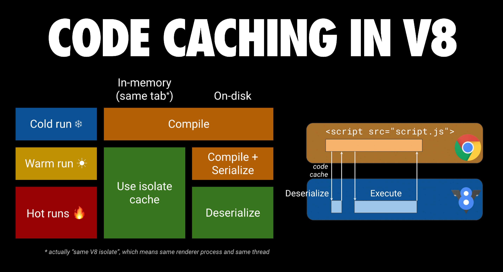
代码缓存在V8中工作方式的可视化
第三次，Chrome从缓存中获取文件和文件的元数据，并将两者都交给V8。V8反序列化元数据，可以跳过编译。如果前两次访问发生在72小时内，则代码缓存将起作用。如果使用ServiceWorker缓存脚本，Chrome同样也具有代码缓存功能。你可以在面向web开发人员的代码缓存中阅读更多有关代码缓存的信息。
结论
在2019年，下载和执行时间是加载脚本的主要瓶颈。你可以为首屏内容设计一个小的同步（内联）脚本，页面其余部分使用若干defer脚本。分解大bundle，这样你就只关注在用户需要的时候发送他们需要的代码，可以最大化V8的并行处理。
在移动设备上，由于网络、内存消耗和较慢CPU的执行时间，你应该发送更少的脚本。在延迟和可缓存性之间进行平衡，以最大限度地增加主线程之外可能发生的解析和编译工作量。